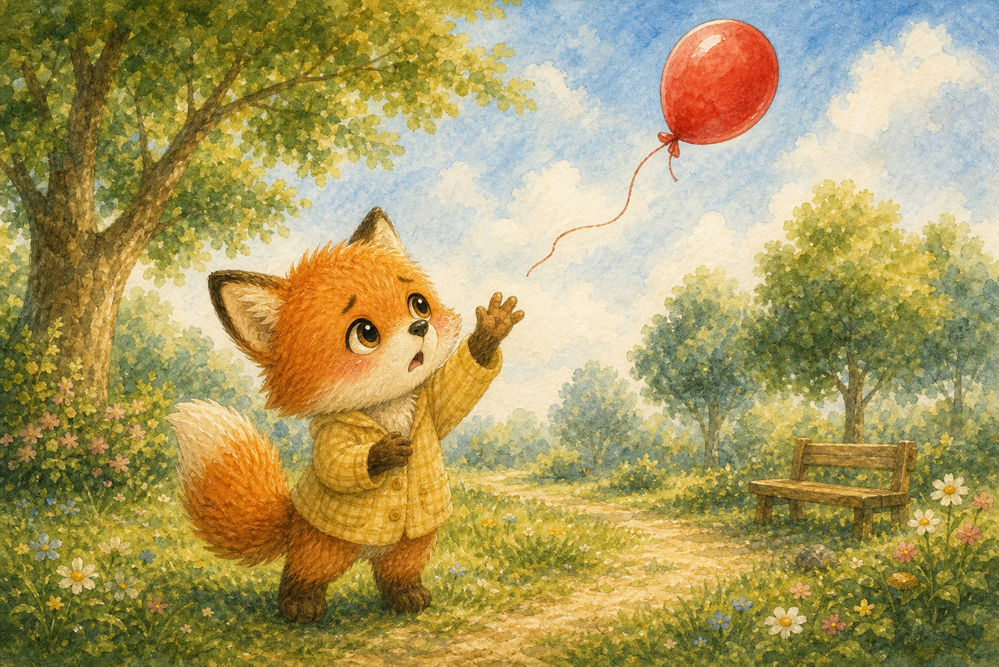
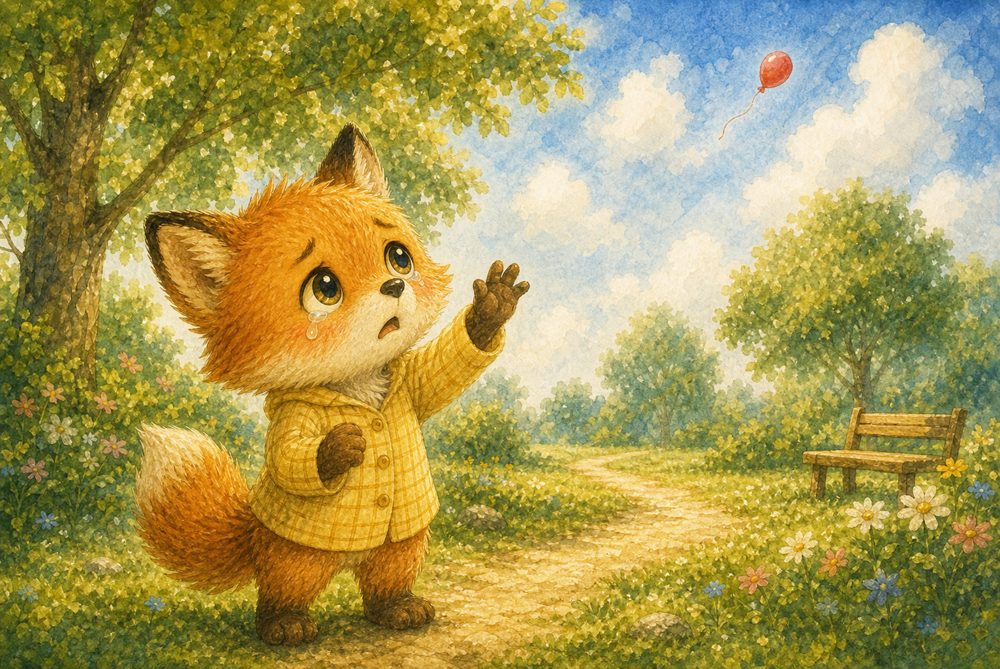
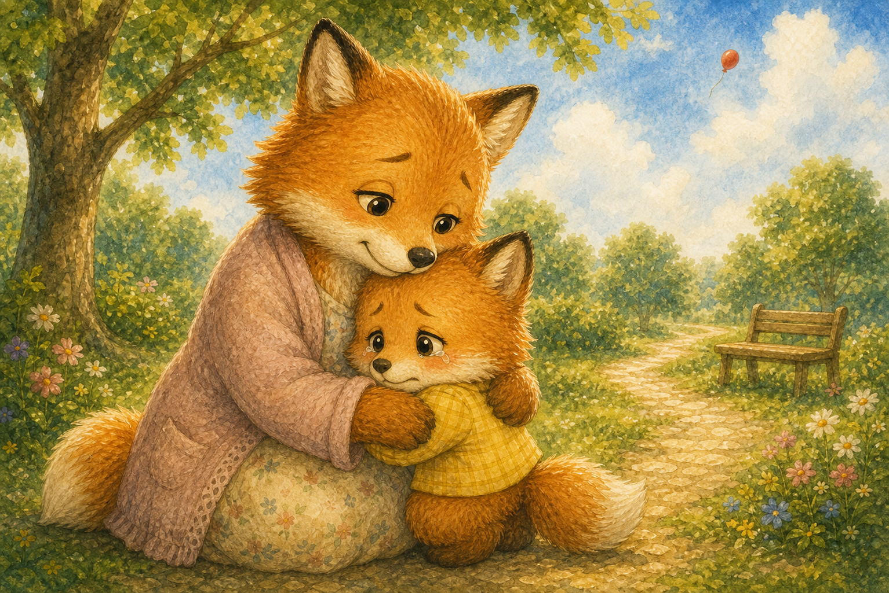
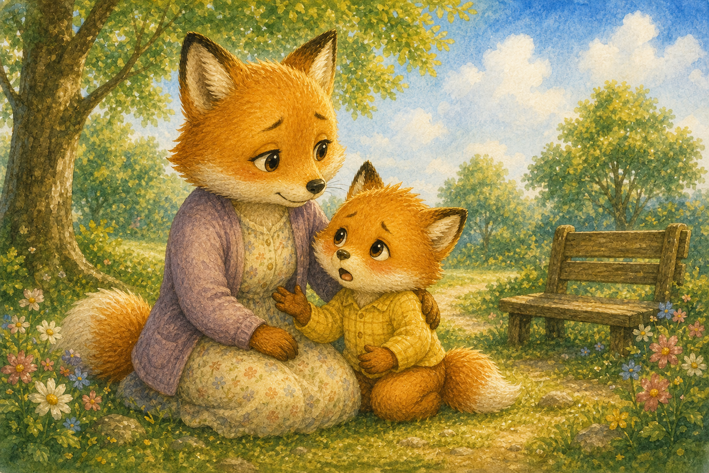
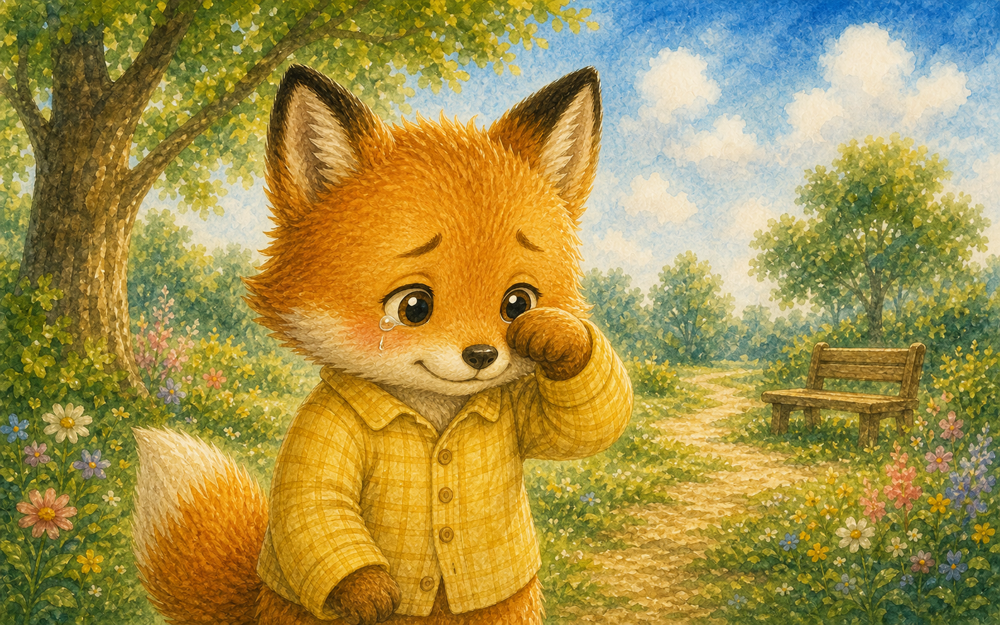
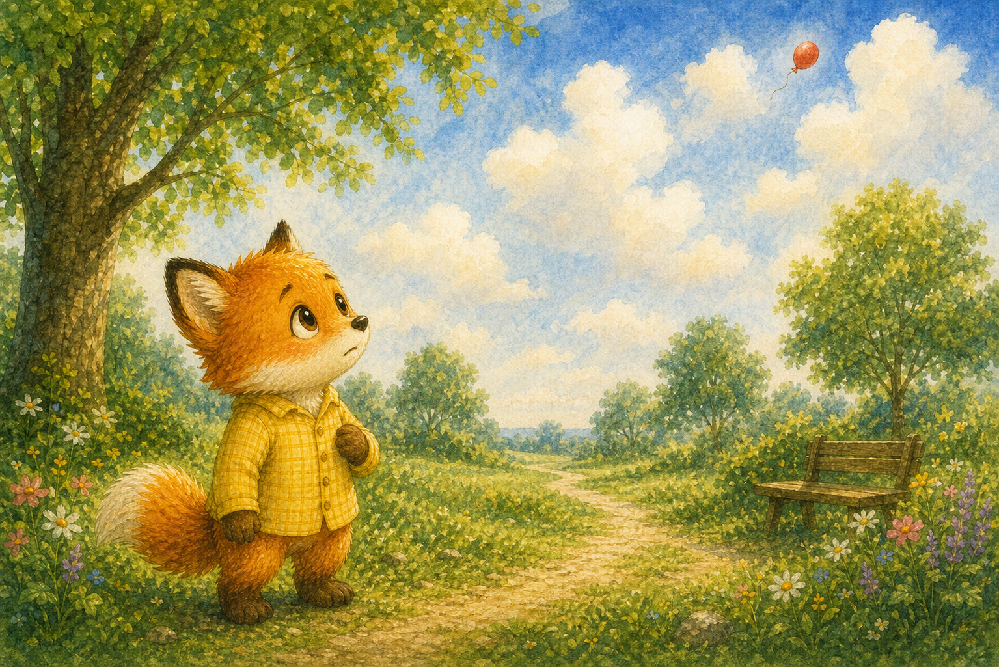
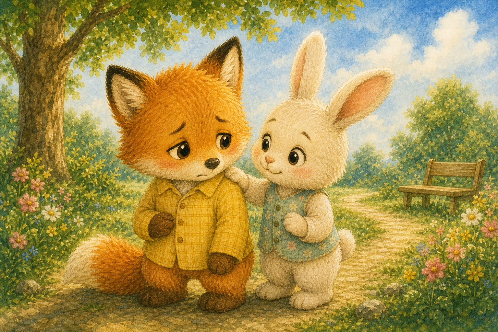
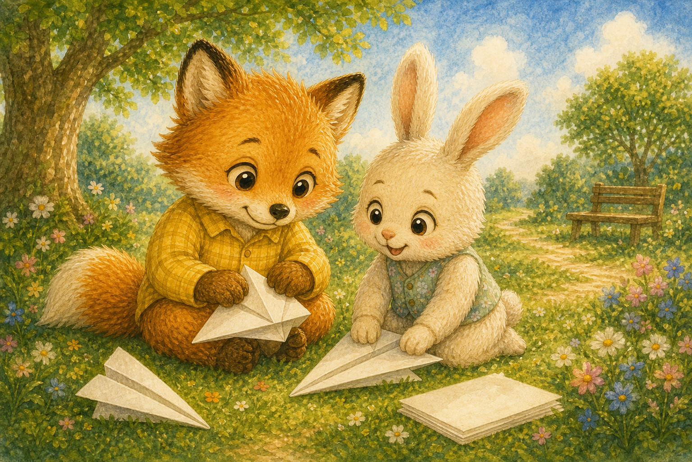
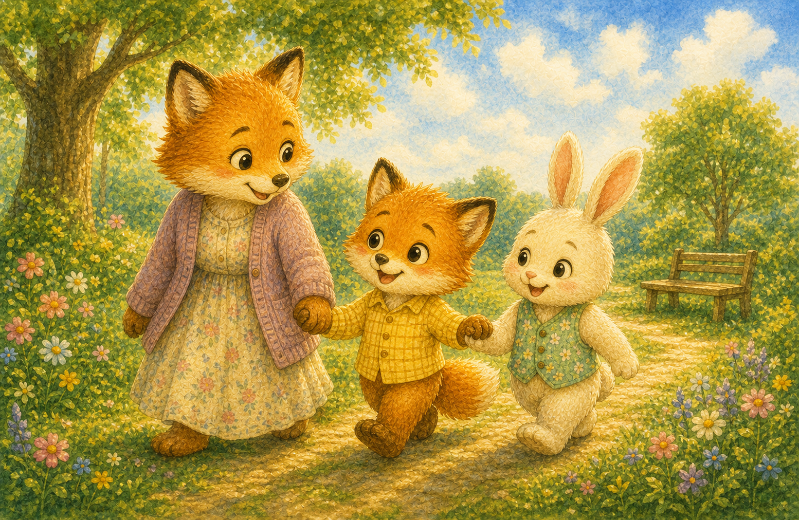

날아간 빨간 풍선
아기 여우 단이가 아끼던 빨간 풍선이 손에서 쑥 빠져나갔어요. 풍선은 하늘 높이 둥실둥실 날아가 버렸지요.
"내 풍선… 가지 마!"

아기 여우 단이가 아끼던 빨간 풍선이 손에서 쑥 빠져나갔어요. 풍선은 하늘 높이 둥실둥실 날아가 버렸지요.
"내 풍선… 가지 마!"

단이의 눈에 굵은 눈물이 그렁그렁 맺혔어요. 가슴속이 텅 빈 것처럼 슬펐답니다.
눈물이 후드득 떨어졌어요.

엄마 여우가 다가와 단이를 가만히 안아 주었어요. 울어도 괜찮다고, 슬픈 마음은 자연스러운 거라고 했지요.
"실컷 울어도 돼, 단아."

단이는 풍선이 정말 좋았다고 엄마에게 말했어요. 슬픔을 말로 꺼내자 가슴이 조금 가벼워졌답니다.
"많이 아꼈던 거라 더 슬펐어."

한참 울고 나니 눈물이 조금씩 마르기 시작했어요. 단이는 손등으로 눈물을 쓱 닦았지요.
마음의 비가 천천히 그쳤어요.

엄마는 풍선이 멀리 여행을 떠난 거라고 말해 주었어요. 어쩌면 구름 친구들과 놀고 있을지도 모른다고요.
"내 풍선이 모험을 떠났구나."

지나가던 친구 토끼가 단이의 어깨를 토닥여 주었어요. 슬플 땐 곁에 있어 주는 친구가 큰 힘이 되었지요.
"내가 같이 있어 줄게."

둘은 함께 색종이로 비행기를 접어 날렸어요. 슬픔이 가신 자리에 새로운 즐거움이 찾아왔답니다.
"이번엔 비행기를 꼭 잡고 있을래!"
구름 사이로 따뜻한 햇살이 비쳤어요. 단이의 마음에도 다시 환한 빛이 들어왔지요.
슬픔 뒤에는 햇살이 찾아왔어요.

단이는 슬픈 날도 지나간다는 걸 알았어요. 곁에 있어 주는 사람들 덕분에 마음이 다시 따뜻해졌답니다.
"슬퍼도 괜찮아. 다시 웃을 수 있으니까."